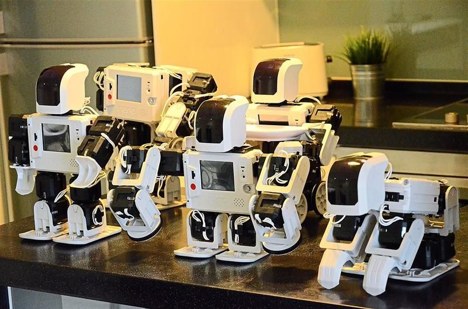

Robotika v šolstvu
Roboti so postali v današnji družbi prisotni tudi v izobraževanju. Nekaj primerov, ki so med najbolj znanimi. Hude poškodbe, hude bolezni ali posledice le teh preprečujejo številnim otrokom, da bi šli v šolo enako kot vrstniki. Roboti-posredniki so bili ustvarjeni posebej za njih. Nudijo jim možnost, da so del razreda in so prisotni pri pouku iz varnega zavetja svojega doma. V svetu je zelo pogosta tudi uporaba robotov za pomoč otrokom avtistom. Avtisti so zelo zmedeni in odvrnjeni od učnega procesa zaradi obraznih izrazov in neverbalnih signalov drugih. Zato so roboti z nespremenljivim videzom idealni mentorji za njih. Podobne metode se uporabljajo tudi za disleksike in ostale otroke z primanjkljajem na določenem področju. V finskem mestu Tampere so šole začele preizkušati socialnega učnega robota, imenovanega Elias, ki se večinoma uporablja za učenje jezikov in matematike. Ker je zabava postala pomemben element učinkovitega učenja, je bil Elias programiran da pleše in spodbuja učence, da pojejo in plešejo. Elias lahko govori in razume tudi 23 različnih jezikov. Doslej je testiranje tega robota potekalo zelo dobro, saj se je večina študentov zelo pozitivno odzvala nanj. V robotiki v izobraževanju je najbolj dejavna Južna Koreja. V državi je program, katerega namen je uvajanje robotov v vsak vrtec. Po nekod so dovršeni roboti, ki jih v ta namen razvijajo, zmožni samostojno vzgajati otroke.
